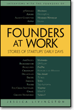

<div><div><div></div><div></div><div><br><br><div><br><br>January 2007<br><br><i>(Foreword to Jessica Livingston's 
<a href="http://www.amazon.com/gp/product/1590597141">Founders at Work</a>.)</i><br><br>Apparently sprinters reach their highest speed right out of the
blocks, and spend the rest of the race slowing down.  The winners
slow down the least.  It's that way with most startups too.  The
earliest phase is usually the most productive.  That's when they
have the really big ideas.  Imagine what Apple was like when 100%
of its employees were either Steve Jobs or Steve Wozniak.<br><br>The striking thing about this phase is that it's completely different
from most people's idea of what business is like.  If you looked
in people's heads (or stock photo collections) for images representing
"business," you'd get images of people dressed up in suits, groups
sitting around conference tables looking serious, Powerpoint
presentations, people producing thick reports for one another to
read.   Early stage startups are the exact opposite of this.  And
yet they're probably the most productive part of the whole economy.<br><br>Why the disconnect?  I think there's a general principle at work
here: the less energy people expend on performance, the more they
expend on appearances to compensate.  More often than not the energy
they expend on seeming impressive makes their actual performance
worse.  A few years ago I read an article in which a car magazine
modified the "sports" model of some production car to get the fastest
possible standing quarter mile.  You know how they did it?  They
cut off all the crap the manufacturer had bolted onto the car to
make it <i>look</i> fast.<br><br>Business is broken the same way that car was.  The effort that goes
into looking productive is not merely wasted, but actually makes
organizations less productive.  Suits, for example.  Suits do not
help people to think better.  I bet most executives at big companies
do their best thinking when they wake up on Sunday morning and go
downstairs in their bathrobe to make a cup of coffee.  That's when
you have ideas.  Just imagine what a company would be like if people
could think that well at work.  People do in startups, at least
some of the time.  (Half the time you're in a panic because your
servers are on fire, but the other half you're thinking as deeply
as most people only get to sitting alone on a Sunday morning.)<br><br>Ditto for most of the other differences between startups and what
passes for productivity in big companies.  And yet conventional
ideas of professionalism have such an iron grip on our minds that
even startup founders are affected by them.  In our startup, when
outsiders came to visit we tried hard to seem "professional." We'd
clean up our offices, wear better clothes, try to arrange that a
lot of people were there during conventional office hours.  In fact,
programming didn't get done by well-dressed people at clean desks
during office hours.  It got done by badly dressed people (I was
notorious for programmming wearing just a towel) in offices strewn
with junk at 2 in the morning.  But no visitor would understand
that.  Not even investors, who are supposed to be able to recognize
real productivity when they see it.  Even we were affected by the
conventional wisdom.  We thought of ourselves as impostors, succeeding
despite being totally unprofessional.  It was as if we'd created a
Formula 1 car but felt sheepish because it didn't look like a car
was supposed to look.<br><br>In the car world, there are at least some people who know that a
high performance car looks like a Formula 1 racecar, not a sedan
with giant rims and a fake spoiler bolted to the trunk.  Why not
in business?  Probably because startups are so small.  The really
dramatic growth happens when a startup only has three or four people,
so only three or four people see that, whereas tens of thousands
see business as it's practiced by Boeing or Philip Morris.<br><br>This book can help fix that problem, by showing everyone what, till
now, only a handful people got to see: what happens in the first
year of a startup.  This is what real productivity looks like. This
is the Formula 1 racecar.  It looks weird, but it goes fast.<br><br>Of course, big companies won't be able to do everything these
startups do.  In big companies there's always going to be more
politics, and less scope for individual decisions.  But seeing what
startups are really like will at least show other organizations
what to aim for.  The time may soon be coming when instead of
startups trying to seem more corporate, corporations will try to
seem more like startups.  That would be a good thing.<br><br><br><br>
<a href="http://www.aoky.net/articles/paul_graham/foundersatwork.htm">Japanese
Translation</a>
<br><br><br><br></div><div></div><div></div><br><div></div><div><center><a href="http://www.amazon.com/gp/product/1590597141"></a></center></div><div></div><div><b>Founders at Work</b><br><br>There can't be more than a couple thousand
people who know first-hand what happens in the first month of a
successful startup.   Jessica Livingston got them to tell us.  
So despite the interview format, this is
really a how-to book.  It is probably the single most valuable 
book a startup founder could read.<br><br></div><div></div><div></div><div></div><br></div></div></div>


  


  


<!-- html110.prod.store.e1a.lumsb.com Sat May 24 16:31:46 PDT 2025 -->